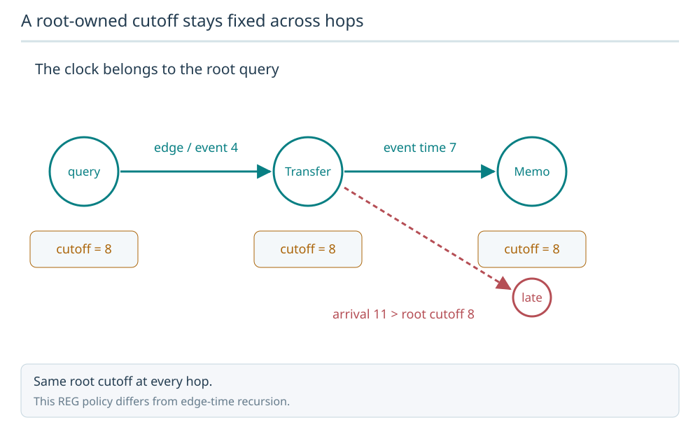
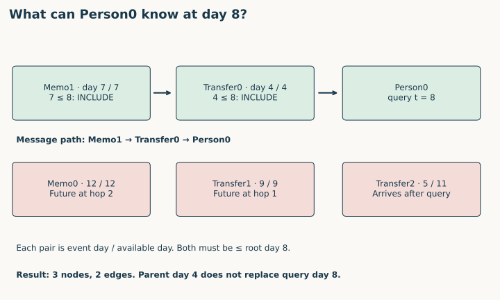
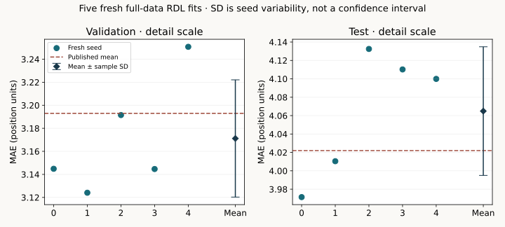

Year 4 · Quarter 1 · Lesson 123
Temporal heterogeneous graphs: what may this query see?
1 · A correct graph can still answer with tomorrow's information¶
Lesson 122 established which rows and foreign keys belong in the relational entity graph (REG). A REG represents each table as a node type, each row as a node, and each foreign-key role as an edge type. Now fix a query: predict something about one entity using information available at time t. The graph can contain many dates, but this query may see only its eligible neighborhood. Our skill is to construct that neighborhood and defend every included row and relationship.
Read Fey et al., Sections 3–4 for the RDL blueprint, then RelBench v1, Sections 2–3 for the released temporal sampling setting. Our real-data experiment uses RelBench; our delayed-arrival example adds an explicit availability contract that the F1 release cannot establish.
Your tangible deliverable: a two-hop, typed neighborhood for a seed entity at time t, plus an audit. A seed is the entity whose prediction we request. A hop expands one relation into the rows that can send information toward the seed. Three live notebook functions implement visibility, sampling, and auditing. They also run on the complete released F1 topology.
This connects the mission directly to evidence: if a relational model sees future race results, its lower prediction error cannot establish useful predictive advantage. Temporal splits and a correct static graph do not by themselves settle what each individual prediction saw.
2 · Which clock controls visibility?¶
A timestamp needs a meaning. Distinguish these before assigning tensors:
| Quantity | Meaning | Example |
|---|---|---|
| Entity creation time | When this entity first exists | Account opened on day 2 |
| Event time | When an observation occurs | Transfer happened on day 5 |
| Availability time | When the system can use that observation | Transfer imported on day 11 |
| Query / seed time t | When the prediction is made | Predict at day 8 |
| Label maturity time | When the future outcome is fully observed | A 7-day target becomes known after its window |
A transfer that happened on day 5 but arrived on day 11 is invisible to a query on day 8. Our teaching contract is event ≤ t AND availability ≤ t. All quantities in the worked example are integer days on one common clock. In F1, tensors use integer Unix seconds; task artifacts also retain original timestamps for query identity. Never compare seconds with nanoseconds.
# An explicit two-clock record, not a fabricated real ingestion history:
stamp = (5, 11) # (event day, availability day)
# eligible(stamp, 8) must be False
We use an inclusive boundary: an observation at exactly t is eligible. This matches the pinned native sampler's upper-bound search. It is a declared convention, not a universal guarantee about simultaneous events: if order within a timestamp is unknown, the application needs a stricter cutoff or sequence key. Pinned pyg-lib 0.4.0 temporal kernel.
Task 1: implement eligible(stamp, cutoff). Reject unknown/nonfinite timestamp values and availability before event time. In this exercise, None means explicitly assumed timeless; it never means “a missing timestamp is safe.” That sentinel is an assumption you must defend.
Feature histories matter too. An account may have existed yesterday, while its current balance includes today's payment. Filtering entity creation times cannot restore the historical balance. The same is true of a corrected result, a changed foreign key, and a label that has not yet matured. These are separate data contracts; timestamped sampling cannot recover missing histories.
3 · Keep the original query cutoff at every hop¶
Use this small graph throughout. Person0 is assumed timeless. Transfers point to their receiver, Person0. Memos point to the transfer they describe. Arrows indicate message direction toward the seed; sampling walks incoming arrows backwards to gather context.
| Node | Event day | Available day | Incoming message destination |
|---|---|---|---|
| Transfer0 | 4 | 4 | Person0 |
| Transfer1 | 9 | 9 | Person0 |
| Transfer2 | 5 | 11 | Person0 |
| Memo0 | 12 | 12 | Transfer0 |
| Memo1 | 7 | 7 | Transfer0 |
Predict before looking: for Person0 at t=8, which transfer and which memo can contribute? Is Memo1 excluded because it is newer than Transfer0?
A root-owned cutoff stays fixed across hops
For this REG contract, every sampled hop belongs to the query at time 8. A Memo at time 7 may inform a Transfer at time 4; a record arriving at time 11 remains excluded.

Predict: Does the second hop inherit cutoff 4?
No. This lesson uses the root query cutoff 8 throughout. Do not substitute the recursive edge-time rule from temporal-attention neighborhoods.
Answer: No. This lesson uses the root query cutoff 8 throughout. Do not substitute the recursive edge-time rule from temporal-attention neighborhoods.



At hop 1, only Transfer0 is eligible. Transfer1 is in the future; Transfer2 arrived late. At hop 2, Memo1 is eligible because day 7 ≤ the root query's day 8. Memo0 is excluded. The result has three nodes and two edges: Memo1 → Transfer0 → Person0.
Do not replace the root cutoff with the intermediate node's day 4. That would incorrectly remove a memo already known at query time. Conversely, filtering only hop 1 lets day-12 Memo0 enter at hop 2. This is a neighborhood representing a database snapshot at t; it is not a chronological event walk requiring decreasing event times along every path.
Task 2: implement sample_temporal(nodes, edges, root, cutoff, hops). Build an incoming-edge index, expand eligible predecessors, keep the original cutoff, and retain node types and original edge identities. A frontier is the newly discovered set to expand next. A seen set prevents repeatedly expanding the same node in this exhaustive breadth-first traversal. With zero hops, return only the eligible root. Reject a future root or unknown endpoint.
Our reference sampler returns all eligible incoming neighbors and is deterministic. The full released trainer bounds cost by sampling fanouts [128,64]: at most 128 neighbors per relation/target at the first expansion and 64 at the second. Uniform sampling is a separate stochastic choice after temporal eligibility. Exact selected neighbors need not match across random engines; our native parity test therefore uses fanout [-1,-1], meaning all neighbors. Released loader.
4 · Edges and reverse relations also need a visibility contract¶
In our main fixture, each FK relation is assumed to be known when its row is known. We still test a separate relationship that becomes available on day 9 although both endpoint rows existed on day 4. At t=8 its endpoints may be present, but the link must be excluded. Both endpoints and the relationship must be eligible.
A reverse edge changes the direction in which information can flow; it does not change when the underlying relationship became available. If you explicitly timestamp forward edges, the reverse store must preserve the same relationship time. Do not give reverse edges an artificial ancient timestamp to make sampling convenient.
The released F1 graph stores timestamps on dated nodes, not separately observed relationship-availability times. The source constructor attaches table.time_col to the node store and constructs PK/FK links plus reverse relations. This lesson therefore audits real endpoint timestamps and edge identity, while leaving unobserved relationship updates unverified. Pinned constructor.
Task 3: implement audit_sample. Verify the root is present, every included node is visible, every edge identity exists, both endpoints belong to this sample, and any explicit relationship timestamp is eligible. This audit proves visibility and endpoint closure. It does not prove that all eligible nodes were included or that every node lies within the requested hop distance. Independent SQL and native-loader comparisons supply those additional checks for our tested queries.
5 · One entity, two prediction times¶
Person0 at day 8 and Person0 at day 12 are two queries. They share the same global entity identity but need different local neighborhoods. At day 12, all six nodes and five edges in the fixture are visible. A batch that merges them into one shared neighborhood can let the earlier prediction receive later information.
The released temporal loader uses disjoint query components: a row may appear twice, once per seed query. A component is one query's local graph. n_id maps a local row to its global row; batch maps it to its query index; seed_time[batch] supplies that query's cutoff. An edge must connect rows with the same query index. Pinned PyG sampler.
for kind, times in batch.time_dict.items():
query = batch[kind].batch
assert (times <= batch['drivers'].seed_time[query]).all()
# Also verify edges stay inside one query and retain original global endpoints.
Predict an intervention: leave the graph and event days fixed, then ignore availability. At t=8, how many extra nodes and edges enter? Restore the rule, then move the cutoff to day 12.
The first intervention incorrectly adds Transfer2: four nodes and three edges instead of three and two. The second intentionally changes the information set by changing prediction time. These are different causal changes. The fixed day-8 baseline remains visible beside the control.
6 · Audit the complete real F1 graph¶
The real-data lane retains all 74,063 released rows and 338,842 directed edges from Lesson 122's graph. Six dated table types contain 72,918 rows. Circuits, drivers and constructors have no released table timestamp; our checks report that assumption rather than inventing creation dates. The portable notebook embeds the complete topology and node-time arrays with hashes; it contains no fitted row-feature payloads.
Real temporal audit: PASS. Exact SQL node sets and PyG typed node/edge sets for nine specified queries.
| Split | Driver row | Unix cutoff (seconds) | Nodes | Edges |
|---|---|---|---|---|
| train | 10 | 1088985600 | 99 | 245 |
| train | 10 | 1083801600 | 75 | 179 |
| train | 677 | -492134400 | 47 | 72 |
| val | 7 | 1249689600 | 570 | 1517 |
| val | 3 | 1208217600 | 420 | 1124 |
| val | 14 | 1140825600 | 530 | 1341 |
| test | 835 | 1464480000 | 1 | 0 |
| test | 817 | 1376352000 | 1 | 0 |
| test | 16 | 1283040000 | 545 | 1465 |
Full temporal report. Equal-time, future-second-hop and mixed-query mutation checks are separate.
The audit selects first/middle/last queries from each of train, validation and test. For all nine queries, the learner's exhaustive two-hop node set agrees with an independent recursive SQL query, and its typed nodes/edges agree with PyG. A further two-query check uses the same driver at different times. This is exact parity on these specified queries, not exhaustive equivalence for every possible root.
Two selected test drivers have no historical neighbors in the released graph and therefore yield only the root. That is a meaningful cold-start case. The release's database is censored at its test cutoff; a later test query does not automatically obtain newly occurring test-period rows. Do not silently append them and call the changed information set a source replay. RelBench v1 data split contract.
The real notebook harness calls your sampler and auditor on all nine queries. Synthetic delayed-arrival tasks and the real event-time checks answer different questions. F1 ingestion timestamps, mutable-feature histories and historical static-table membership remain unavailable.
7 · Follow the sampled graph through the full model¶
This is the same released RDL model introduced in L117 and used in L122; the new mechanism is the visibility audit surrounding every batch. Trace one driver query all the way to its prediction:

Diagram trace. Find the query cutoff at sampling. Can the neural encoder repair a future row admitted before it? On a narrow screen, scroll the figure sideways.
- The graph stores each table's typed columns in a
TensorFrame, a container for numerical, categorical, timestamp and text features. Released per-table feature encoders and a four-block row ResNet map each sampled row to 128 learned coordinates. - The model subtracts a row timestamp from its own seed query time, converts the difference to days, and adds a learned encoding of that relative age. This tells the model how old an eligible observation is; it does not make a future observation eligible.
- Two heterogeneous GraphSAGE rounds aggregate messages with relation-specific transforms and sum aggregation, then normalization/ReLU. The seed driver's scalar head predicts finishing position. Shapes contract from sampled context to seed outputs: the final loss uses
[number of seed queries, 1], not one supervised target for every context row. - Adam minimizes mean absolute error (MAE), the average absolute difference between predicted and target position. Validation MAE selects the first best epoch; the test labels do not choose checkpoints.
The complete visible model, graph materializer, temporal encoding, training loop and primitive source excerpts are in both notebooks. The training gate uses those same definitions. Our standalone teaching sampler is an exhaustive pedagogical implementation; full reproduction uses the native bounded loader with transparent audits. We do not replace the released sampling algorithm with the small reference implementation.
8 · Full selected reproduction and its evidence boundary¶
Named experiment: Robinson et al., RelBench v1 Table 7, F1 driver-position, RDL. Five fresh full-data fits use ten epochs each, all 7,453 training queries each epoch, batch size 512, width 128, two layers, fanouts [128,64], uniform temporal sampling, and Adam with learning rate .005. Seeds are 0–4 after preprocessing seed 42. Predictions are clipped to training-label 2nd/98th percentiles as in the released path. Published validation/test targets are 3.193/4.022 MAE. Paper, Table 7 and Appendix B.
Source is pinned at 9aa346267c2e1c560bd92da07d6f4ad1ca2f0639; database, task archive, text model and runtime are pinned too. The wrapper audits every training and evaluation batch without consuming random numbers: original node timestamps, each row's query cutoff, original edge identities and query isolation. The budgeted pilot gates five fresh runs. Protocol and exact commands.
Predict before reading: if no timestamp violations occur but the score differs from the paper, does that establish a sampling bug? No: a temporal invariant and a predictive score test different claims. Our predeclared “CLOSE” threshold is an absolute mean difference of 0.2 MAE; it is descriptive, not a statistical equivalence test.
Fresh author-reference execution: COMPLETE selected released-protocol experiment.
| Split | Mean MAE | Sample seed SD | Published mean | Verdict |
|---|---|---|---|---|
| val | 3.171187 | 0.050901 | 3.193 | CLOSE |
| test | 4.064913 | 0.069904 | 4.022 | CLOSE |
| Seed | Selected epoch | Validation MAE | Test MAE |
|---|---|---|---|
| 0 | 9 | 3.144878 | 3.971446 |
| 1 | 9 | 3.124080 | 4.010469 |
| 2 | 10 | 3.191524 | 4.132490 |
| 3 | 10 | 3.144670 | 4.110226 |
| 4 | 7 | 3.250785 | 4.099933 |
All 6,295 final predictions were independently scored. Maximum original-model output discrepancy: 3.81e-06. Measured pilot plus full-fit worker resource estimate: USD 0.0596, excluding unitemized overhead. The aggregate plan caps reservations plus overhead reserve at USD 10. Evidence.
Every training/evaluation batch passed timestamp, original-edge and query-isolation audits across 403,895 query occurrences (repeated across epochs). Audit example.


Deviation ledger: the release uses [128,64] fanouts versus the paper table's 128; historical seed identities are unavailable; preprocessing type inference is fixed at seed 42; the pinned modern runtime/text revision does not reconstruct historical binaries. The release computes preprocessing statistics from the database up to the test cutoff rather than fitting them solely on training-visible rows. We preserve and disclose that behavior for source replay. A per-query node cutoff therefore does not establish an entirely point-in-time-clean feature pipeline.
A completed selected experiment is evidence about this named release protocol. It does not establish the entire RelBench paper, Fey's beta experiments, historical bitwise identity, unseen ingestion histories, or your own mastery. The author predictions can be rescored offline; this is not a new fit in your notebook. Your status remains PENDING_WRITTEN_DEFENSE.
9 · EXIT: defend what the query could know¶
Submit your three functions, the nine real query audit results, and a written defense:
- At t=8, explain each accepted and rejected row in the worked graph. Why is Memo1 valid despite being newer than Transfer0?
- Explain the exact-time boundary, delayed arrival, and a mutable feature that node filtering cannot repair.
- Trace local index → global identity → query index → cutoff for the same driver at two times. What must hold for every edge?
- Give a sample that passes the visibility audit but is incomplete. Which independent comparison detects it?
- Separate the full selected replay, real event-time checks, unavailable availability histories, and whole-paper parity.
Student lab · Executed solution · Reference · Visible implementation.
In 1, 7 and 30 days, reconstruct the day-8 neighborhood without notes and invent a second-hop leakage counterexample. L124 will formalize the entity/time/label query table; L156 returns to the full leakage audit. Ask the agent follow-up questions about any timestamp, sampling step or evidence claim you cannot yet defend.
Carry this forward. Specify the future target and identify each question in a task table. Continue to Lesson 124.